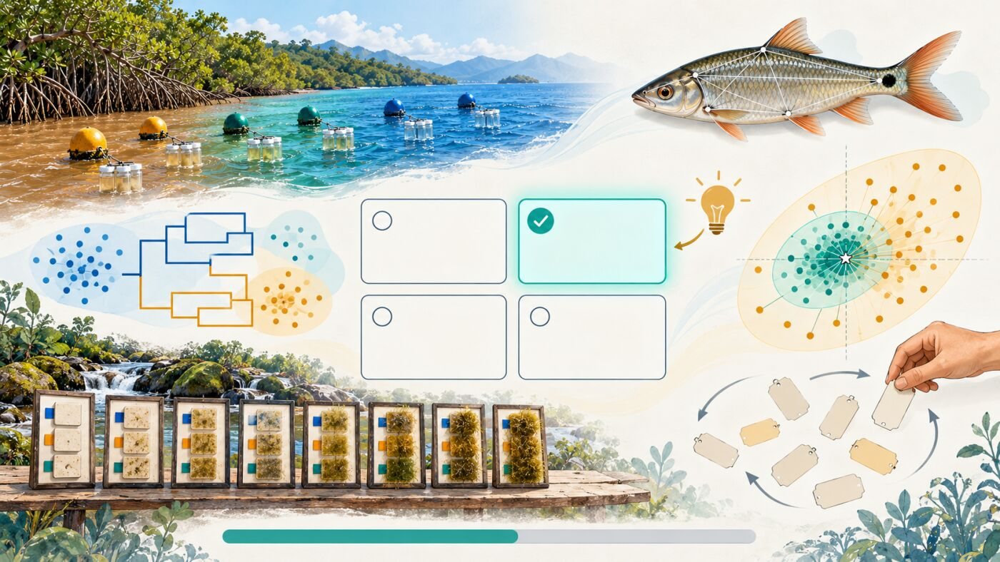

Cuestionario 1 · Clasificación y pruebas multivariadas
Bioestadística y Diseño Experimental · Semana 4 · 2026-II
Instrucciones
Este cuestionario acompaña el Taller 10 · Clasificación y pruebas de hipótesis multivariadas de la Semana 4. Son 12 preguntas de opción múltiple basadas en las Partes 1 a 4 del taller y en el estudio de caso: la silueta y el corte en k grupos, la correlación cofenética, la circularidad de probar los grupos del CLA, la validación cruzada de la LDA, los coeficientes de estructura del biplot canónico, la MANOVA con supuestos violados, el problema de tener menos individuos que variables, la lectura conjunta de la PERMANOVA y betadisper, la distancia para medidas morfométricas, la PERMANOVA con la visita como bloque y el nivel de la permutación en el mesozooplancton.
Cada pregunta tiene una pista opcional y, al responder, una explicación breve; se recomienda usarlas para repasar, no solo para obtener una calificación. Las opciones tienen un largo parecido y su orden cambia en cada intento, así que conviene leerlas todas antes de elegir. Es una práctica sin nota; la misma práctica está en Moodle (Cuestionario1_T10) y sirve de repaso antes de la sustentación final del estudio de caso (rúbrica R6).
Pregunta 1 de 12
Referencias
Las preguntas de este cuestionario son de elaboración propia para este curso, a partir de las bases de datos del Taller 10 (Rodríguez-Barrios, 2023; Gupta et al., 2018; Osorio Ávila et al., 2015, y Vargas-Ospina et al., 2025); no reproducen ejercicios ni datos de las fuentes citadas en el taller.